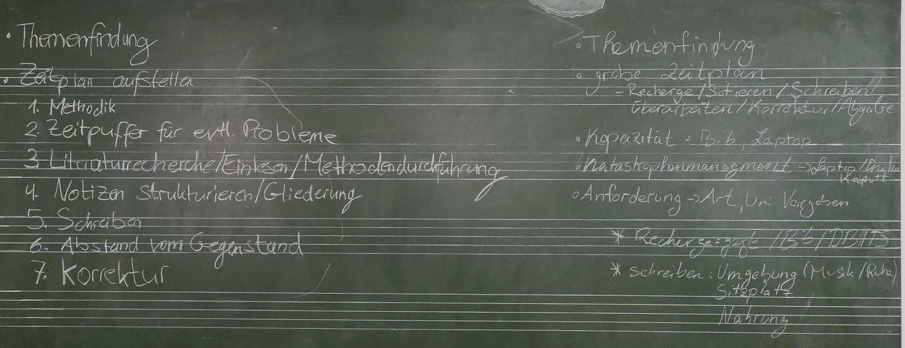
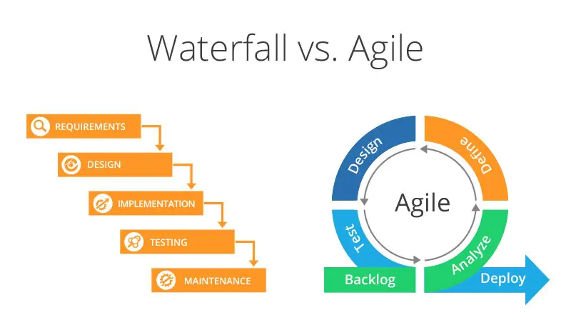

1 Projektmanagement
Gute Projektmanagementstrategien können für den akademischen Alltag unglaublich hilfreich sein. Sei es, die verschiedenen Seminare und Vorlesungen und dazugehörigen Hausaufgaben, Lektüre und Recherche zu bewältigen, eine Hausarbeit zu schreiben, oder ein eigenes Forschungsprojekt, z.B. im Rahmen einer Bachelor- oder Masterarbeit zu planen.
Leider ist es jedoch häufig so, dass man sich diese Strategien selbst aneignen muss, was normalerweise dazu führt, dass viele irgendwie improvisieren und hauptsächlich damit beschäftigt sind, das Nächstdringendste zu erledigen oder zu versuchen, nicht allzusehr in Rückstand zu geraden.
1.1 Wie strukturiert man ein Projekt (vorläufig)
Bei unserem Brainstorming zum idealtypischen Verlauf des Schreibens einer Hausarbeit kamen zwei recht ähnliche Ergebnisse des Brainstormings heraus.

Wir können eine ganze Reihe von Gemeinsamkeiten erkennen. Beispielsweise beginnen beide Vorschläge mit der Themenfindung.
1.2 Was kann bei einer Hausarbeit schiefgehen?
Allerdings ist es sicherlich auch eine bekannte Erfahrung, dass nicht immer alles so glatt läuft, wie die beiden Strategien es darstellen.
Was kann alles passieren, das dazu führt, dass der ursprüngliche Plan nicht aufgeht? Hier unsere Sammlung aus dem Seminar:
- Bücher sind nicht verfügbar oder müssen per Fernleihe bestellt werden und kommen dann zu spät an
- Man verkalkuliert sich mit der Zeit und der säuberlich aufgestellte Zeitplan ist hinfällig
- Viel Zeit verstreicht, weil man auf eine Antwort von Betreuer warten muss, aber keine bekommt
- Computerprogramme funktionieren anders als ursprünglich gedacht und es vergeht viel Zeit bei der Einarbeitung; möglicherweise muss sogar das Thema geändert werden
- Im Falle von Arbeit mit Social-Media-Daten kann es vorkommen, dass diese nicht mehr verfügbar sind (Posts sind gelöscht oder auf privat gestellt)
- Aller Art technische Probleme (z.B. Laptop kaputt, Akku hinüber)
- Bei empirischer Arbeit, z.B. Terminfindungsschwwierigkeiten mit Interview-Partnern
- Startschwierigkeiten (eigene Motivation, Disziplin, Überforderung, Schreibblockade)
- Themensuche: Wo fange ich überhaupt an?
- Während der Arbeit in Sackgasse geraten und es muss umdisponiert werden
- Krankheit oder andere unvorhergesehene Umstände
- Mangelndes Feedback / Gefühl von Isolation und mangelnder Hilfestellung
- und, und, und…
Embrace the chaos!
1.3 Eine Alternative
Idealtypische, lineare Verläufe wie die oben skizzierten setzen normalerweise voraus, dass ein nächster Schritt erst angegangen werden kann, wenn der jetzige vollständig abgeschlossen ist. Dieses Verfahren wird manchmal auch als “Waterfall Strategy” bezeichnet, da man, wie bei einem Wasserfall, nicht mehr zu früheren Stadien zurückgehen kann.
Dem gegenüber stehen modernere, so genannte agile Projektplanungs und -management strategien, bei denen die Wiederholung und stetige Verbesserung von Schritten und Prozessen im Vordergrund steht. Sie zeichnen sich dadurch aus, dass Verbesserungs- und Korrekturmöglichkeiten direkt in den Planungsprozess eingebaut sind.

Eine populäre App zur Verwaltung von Aufgaben (“Tasks”) ist Todoist. Dort findet man auch Anleitungen für verschiedene Produktivitätsmethden, sowie ein Quiz, das zur Reflexion über die eigenen Bedürfnisse und Strategien anregen kann.
- Beantwortet die Fragen im Quiz.
- Wählt eine der angebotenen Strategien aus, lest den Text und schreibe eine kurze Zusammenfassung und Bewertung.